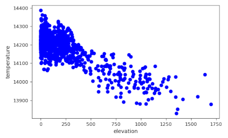
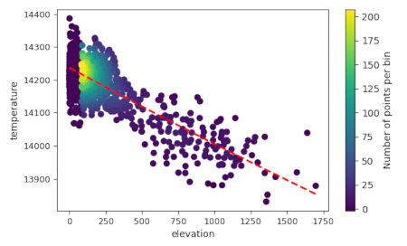

d.vect.scatter draws a scatterplot of the value in one column against the values in another column. Optionally, a linear or polynomial trendline with user-defined degrees can be drawn on top.
There are a few additional layout options, including the option to set the color of the dots, the color, line type, and width of the trendline, and the font size of the axis and tic labels.
Instead of a fixed color, dots can be colored by the spatial density of nearby points, using the option type=density. The spatial density is computed by grouping the points in 2D bins. The number of bins along the x-axis and y-axis is user-defined.
By default, the resulting plot is displayed on screen (default). However, the user can also save the plot to a file using the file_name option. The format is determined by the extension given by the user. So, if file_name = outputfile.png, the plot will be saved as a png file.
Use the raster layers elev_state_500m from the PERMANENT mapset of the NC sample dataset to set the region and mask.
g.region raster=slope r.mask raster=elev_state_500m
r.random input=elev_state_500m npoints=1000 vector=randompoints seed=10
v.what.rast map=randompoints raster=elev_state_500m column=elevation v.what.rast map=randompoints raster=MOD11B3.A2016336.h11v05.single_LST_Day_6km@modis_lst column=temperature
v.scatterplot map=randompoints x=elevation y=temperature

Figure 1. Scatterplot of
elevation against temperature in 1000 randomly selected locations
Draw a density scatter of the elevation values against the slope
values. Add a dashed linear trendline with a red color.
v.scatterplot map=randompoints x=elevation y=temperature \
line_color=252:0:0:255 type=density bins=10,10 \
trendline=linear

Figure 1. Density
scatterplot of elevation against temperature in 1000 randomly selected
locations. Dashed red line is the trendline.